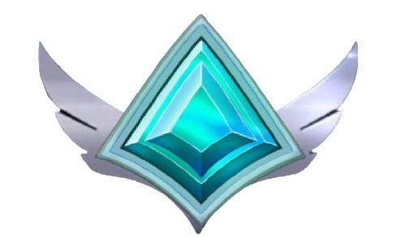
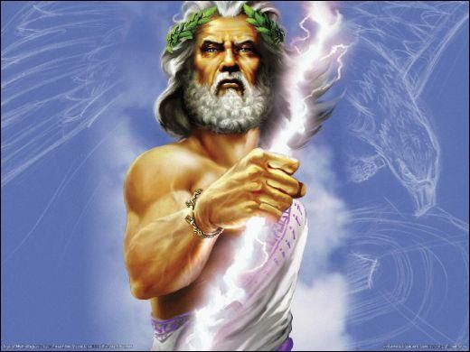
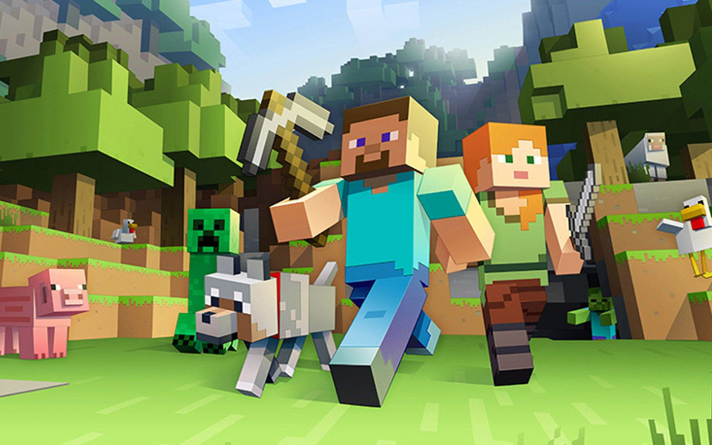
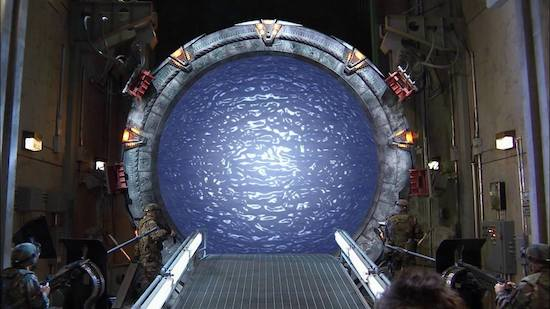
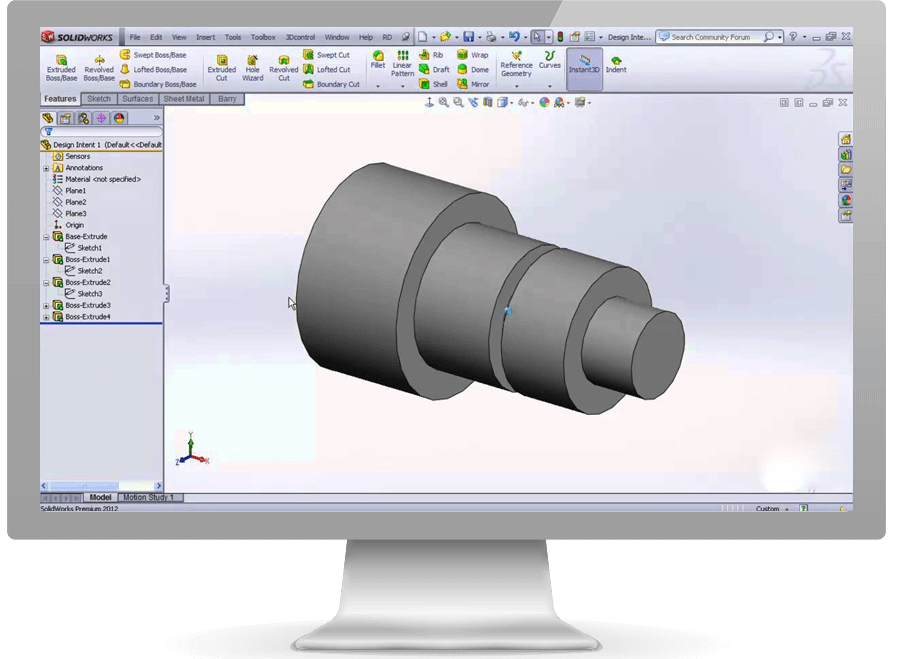
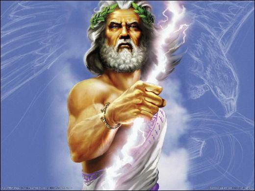
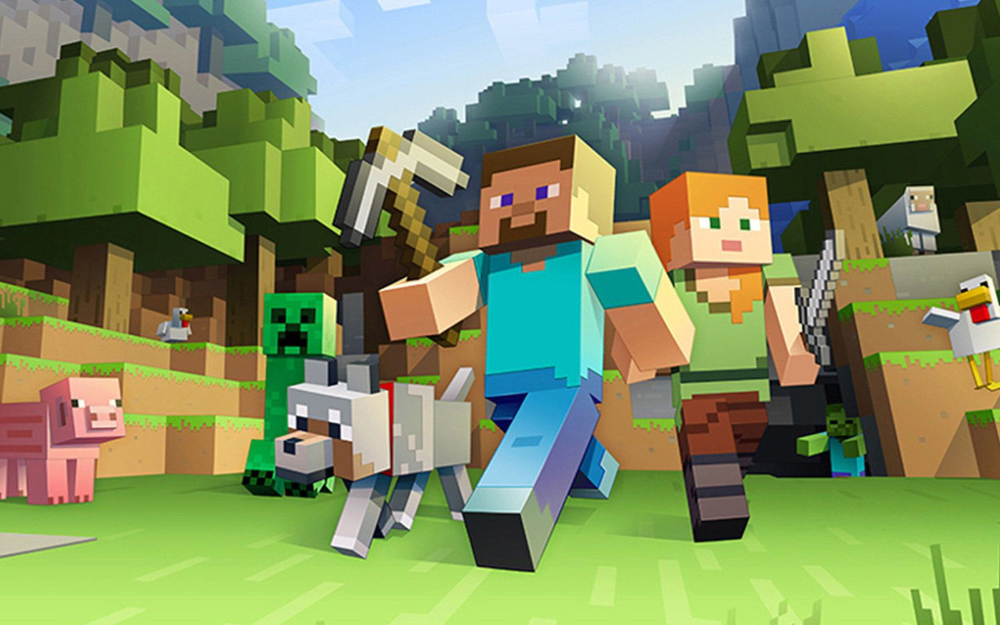
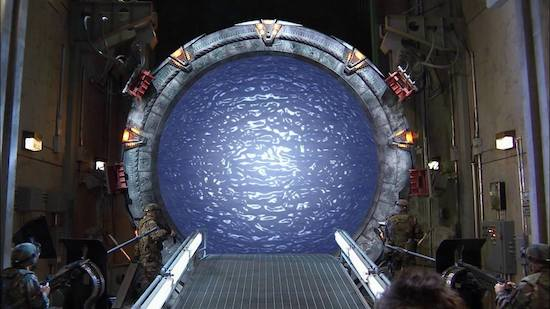
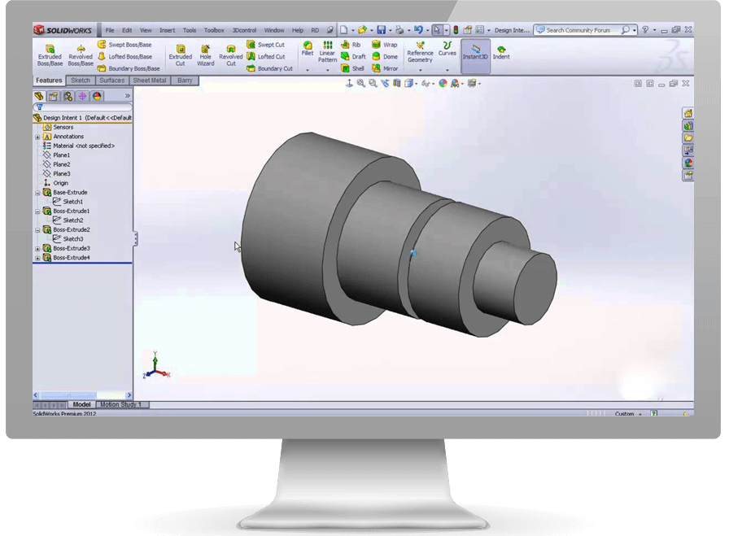

Qui suis-je ?
Bonjour, moi c'est François, 23 ans, grand passionné de cinéma SF et de jeux vidéos, mais aussi de mythologie grecque et égyptienne. Ecrivain amateur durant mes heures perdues.
Mon parcours
De 2013 à 2015, j'ai fait un BAC STI2D, qui m'a permis de découvrir le dessin industriel (CAO/DAO). De 2015 à 2017, j'ai continué dans cette voie en faisant un BTS CPI. De 2017 à 2019, je me suis réorienté dans la conception de meubles en bois en faisant un BTS DRB. Et depuis 6 semaines je suis une formation chez Simplon.
Mes compétences
| Catégories | Logiciels | Machines |
| Dessin industriel (CAO/FAO) | Solidworks, Autocad, Catia, | Ordinateur |
| Fabrication en bois | WoodWop | CN 3-5 axes, Toupie, Raboteuse, Dégauchisseuse, Tenonneuse, Tourillonneuse, Plaqueuse, Presse, Encolleuse, Ponceuse à bande |
| Drive, Word, Excel, PowerPoint, Docs, Sheet, SLide, Meet | Ordinateur |
Galerie

 






